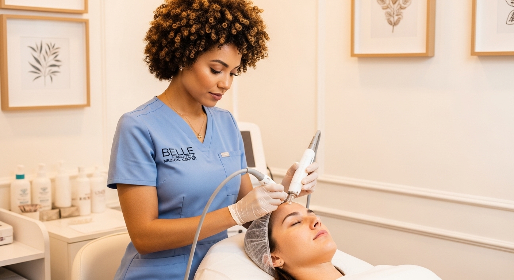

Youth Pen: Reescribiendo la Historia de tu Piel
Regeneración celular a través de la inducción natural

Existen marcas en nuestra piel que preferiríamos suavizar: cicatrices de acné, líneas de expresión que cuentan historias de risas o preocupaciones, y poros dilatados. El Youth Pen (también conocido como terapia de microagujas o microneedling) es uno de los avances más hermosos en la medicina estética, porque no introduce sustancias extrañas para rellenar, sino que despierta el poder autosanador de tu propio cuerpo.
¿Qué es el Youth Pen y cómo transforma tu piel?
Este dispositivo de alta precisión cuenta con microagujas estériles que realizan punciones microscópicas en la capa superficial de la piel. Estas micro-lesiones controladas son casi imperceptibles, pero envían una señal de alerta al cerebro: "necesitamos reparar esta zona".

Como respuesta, el cuerpo envía un torrente de sangre rica en factores de crecimiento y desencadena una producción masiva de colágeno y elastina nuevos. El resultado, tras un proceso de regeneración natural, es una piel notablemente más lisa, con un tono más uniforme, cicatrices minimizadas y una juventud renovada y real.
Acompañamiento en cada paso de tu renovación
Entendemos que la idea de "agujas" puede generar inquietud, por lo que nuestro compromiso es tu total comodidad y tranquilidad. En nuestra clínica en El Poblado, Medellín, aplicamos protocolos estrictos para minimizar cualquier molestia, guiándote paso a paso y celebrando contigo cada avance en la textura y salud de tu piel. Tu bienestar es el centro de nuestro propósito.